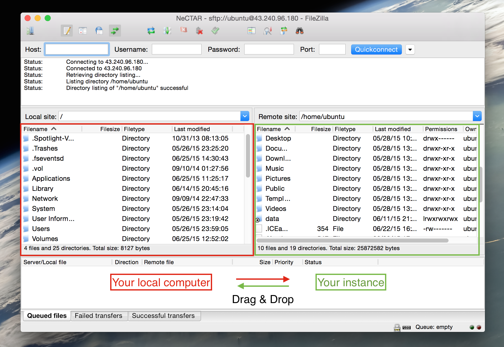

Module 7
Launching and Connecting
Sections of this module:
IntroductionCreate a ssh key
Launching an instance
Connect to the instance
Configuration and control
Connect to a remote desktop
Graphical Interfaces on the ssh terminal
Install a web server
Managing storage
On-instance storage
Object storage
Volume storage
Copying files across
Summary
Appendix
View all sections on one page (Printer friendly)
Copying files across
You may want to easily access files on your ephemeral or volume storage from your local office computer. We will discuss two ways to do this:
-
Using a SFTP client
-
On the command line, using a secure copy command
Option 1: Using a SFTP client
You may use any FTP client which also supports the secure SFTP protocol, which uses ssh to secure the connection. There are many clients you may use. In this tutorial, we are going to describe the setup for the popular FileZilla FTP client.
Step 1. Install FileZilla
-
Windows and Mac:
Download the FileZilla client (not the server!) for your OS on the FileZilla website. Follow the installation instructions for your platform. -
Linux:
It is strongly recommended that you use the package manager of your distribution. E.g. on Ubuntu, you can install with:
sudo apt-get install filezilla
Alternatively, you can also find FileZilla in the Ubuntu Software Center.
Step 2. Enable ssh agent to handle your private key.
It is possible to add a key file to the FileZilla client (On Edit > Settings, or a Mac, this is FileZilla > Settings, and then add the key file on Connection > SFTP), and then use the ‘Interactive’ logon type. However, when adding the key directly to FileZilla, it is converted to an unprotected one. This is not recommended. So we will use another method: We will use a SSH authentication agent, which holds your private keys in memory, already decoded, so that you can use them without needing to type a passphrase.
-
Windows:
You willl need to download another tool from PuTTY called Pageant (the PuTTY SSH authentication agent). You can find instructions on how to install Pageant and load your key in the Appendix.
Don’t forget to close Pageant when you’re done! Otherwise any user with access to your computer can simply open FileZilla and access your files without having to type the ssh key passphrase. To close pageant, go to the system tray icon, right click and Exit pageant.
-
Linux and Mac OS X:
Open up a terminal on your local computer. Add your ssh key to the agent:ssh-add ~/.ssh/Nectar_KeyIt will ask you for the passphrase. Type this in to unlock the key and add it to the agent.
Don’t forget to remove the key from the agent when you are done! Otherwise any user with access to your computer can simply open FileZilla and access your files without having to type the ssh key passphrase. Remove the key with:
ssh-add -d ~/.ssh/Nectar_Key
To make sure your key is not loaded, type:
ssh-add -l
and the Nectar_Key should not be listed.
Step 3. Configure your site in FileZilla
Open FileZilla and go to File > Site Manager.
Specify the following details:
- Host: Your IP address
- Port: 22
- Protocol: SFTP - SSH File Transfer Protocol
- Logon type: Normal
- User: ubuntu
- password: The password for ubuntu user, however it will not be used because you are using the SSH key instead, so you can leave this empty.
On the left-hand panel, you may rename your site to something more meaningful, e.g. “NeCTAR”.
Click Connect to connect to your instance and close the site manager. Whenever you want to reconnect, you have to open the Site Manager again. You can also access it via the symbol on the top right of the window.
Then, you will be asked whether you want to trust the host. You can answer with Yes.
You should now be connected to your instance and see your files:

- in the left-hand pane, your local files are listed
- on the right-hand pane, you will see the files on your instance.
You can drag and drop between them or drag and drop to/from file windows on your computer.
When you are done, close the window to disconnect.
Option 2: Use the command line
Instructions vary between Linux/Mac and Windows. Follow the instructions for your OS below.
Windows
You may use the PuTTY command line tool pscp.
First, open the Windows Command prompt: On Windows earlier than 8, click on the Start button locate the Search filed. On newer Windows systems, click Search in the right-hand pane. Type “cmd” in the search field and your command line prompt will open.
Download pscp.exe from the PuTTY website and save it in your C:\WINDOWS\system32 folder.

Saving pscp.exe in the system32 folder is the easiest way to do it. If you cannot access your system32 folder, you may add the folder where you downloaded pscp.exe to the systems PATH environment variable. Say you have saved pscp.exe for example in D:\Documents\pscp.exe. Go to your Windows command line that you just opened, and type:
set PATH=%PATH%;"D:\Documents\pscp.exe"
Now go to your Windows command prompt.
The pscp.exe command takes two paths as arguments:
-
A path we shall symbolically name <local-file-path> is a path on your local computer. If you copy a file from your instance to your local computer, this will be the path to the folder on your local computer where you want to copy the file to. If you copy a file from your local computer to the instance, this will be the path on your local computer where the file is located.
-
A path we shall symbolically name <instance-file-path> is a path on your instance. If you are copying a file from your local computer to the instance, this is the path to the folder where you want to copy the file to. If you are copying a file from the instance to your local computer, this is the path where the file you want to copy is located on your instance.
If you have another username than ubuntu, replace ubuntu in the following commands with your user name.
To copy a file to your instance, go to your windows command prompt and type:
pscp.exe -i <path-to-ssh-key> <local-file-path> ubuntu@NNN.NNN.NNN.NNN:<instance-file-path>
replacing the N’s with your IP address. You need to specify the path where you have saved your nectar ssh key in <path-to-ssh-key>.
Note that if you are using Pageant (as described in the Appendix), you can skip the option -i <path-to-ssh-key> in all pscp commands.
For example, to copy the local file c:\documents\foo.txt to your instance and save it there in the folder /data, if your private key is saved in c:\documents\Nectar_Key.ppk, you would type:
pscp -i c:\documents\Nectar_Key.ppk c:\documents\foo.txt ubuntu@NNN.NNN.NNN.NNN:/data
Note that the local path to c:\documents\foo.txt has to be given in Windows syntax, using backslash \ instead of forward slash /. The <instance-file-path> on your instance however uses the Linux notation with the forward slash / separator.
Note: If you leave <instance-file-path> empty, it will copy your file into your ubuntu users home directory.
To copy a file from your instance to your local computer, you have to swap the order of the <local-file-path> and ubuntu@NNN.NNN.NNN.NNN:<instance-file-path> in the command above:
pscp.exe -i <path-to-ssh-key> ubuntu@NNN.NNN.NNN.NNN:<instance-file-path> <local-file-path>
Note: If you use ”.” as <local-file-path>, it will copy your file into your current working directory, which is the folder your PuTTY terminal is currently operating from.
For example, if you want to copy the file /data/foo.txt to your C:\documents folder on your local computer, and your private ssh key is located in C:\documents\Nectar_Key.ppk:
pscp.exe -i C:\documents\Nectar_Key.ppk ubuntu@NNN.NNN.NNN.NNN:/data/foo.txt C:\documents
If the pscp command is not working, make sure you have no error in the paths to your ssh key or your OpenRC file. On Windows, white spaces are problematic. If you path has white spaces, put the whole path in quotation marks, e.g. “D:\My Files\pscp.exe”. Also, note that you have to use the backslash \ in windows, instead of the forward slash / on Linux systems.
Linux or Mac OS X
You can use the scp command to copy files across.
The scp command takes two paths as arguments:
-
A path we shall symbolically name <local-file-path> is a path on your local computer. If you copy a file from your instance to your local computer, this will be the path to the folder on your local computer where you want to copy the file to. If you copy a file from your local computer to the instance, this will be the path on your local computer where the file is located.
-
A path we shall symbolically name <instance-file-path> is a path on your instance. If you are copying a file from your local computer to the instance, this is the path to the folder where you want to copy the file to. If you are copying a file from the instance to your local computer, this is the path where the file you want to copy is located on your instance.
If you have another username than ubuntu, replace ubuntu in the following commands with your user name.
To copy a file to your instance:
scp -i ~/.ssh/Nectar_Key <local-file-path> ubuntu@NNN.NNN.NNN.NNN:<instance-file-path>
replacing the N’s with your IP address.
Note: If you leave <instance-file-path> empty, it will copy your file into your ubuntu users home directory.
For example, if you want to copy the file /home/username/foo.txt to your /data folder on the instance:
scp -i ~/.ssh/Nectar_Key /home/username/foo.txt ubuntu@NNN.NNN.NNN.NNN:/data
To copy a file from your instance to your local computer, you have to swap the order of the <local-file-path> and ubuntu@NNN.NNN.NNN.NNN:<instance-file-path> in the command above:
scp -i ~/.ssh/Nectar_Key ubuntu@NNN.NNN.NNN.NNN:<instance-file-path> <local-file-path>
Note: If you use ”.” as <local-file-path>, it will copy your file into your current working directory.
For example, if you want to copy the file /data/foo.txt to your /home/username/ folder on your local computer:
scp -i ~/.ssh/Nectar_Key ubuntu@NNN.NNN.NNN.NNN:/data/foo.txt /home/username/

 This work is licensed under a
This work is licensed under a